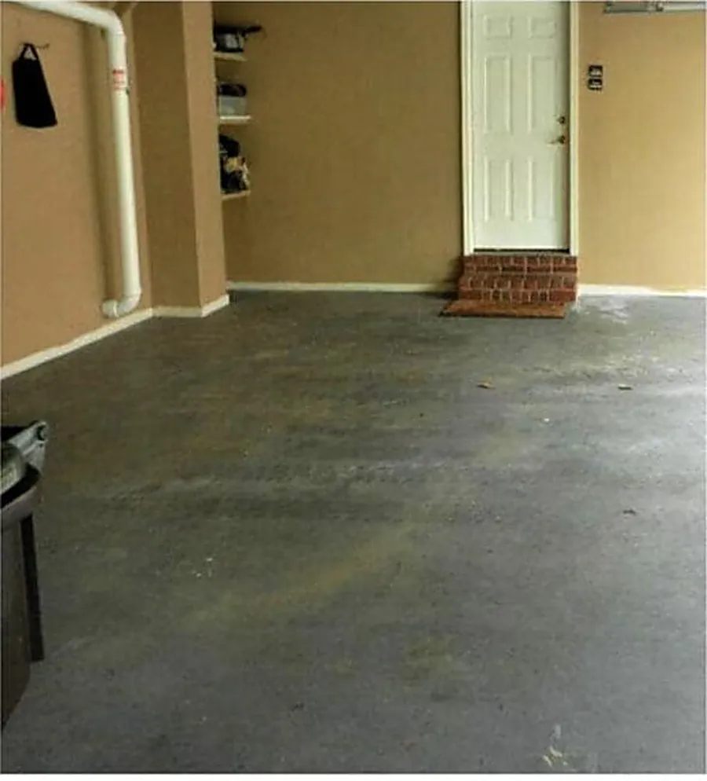
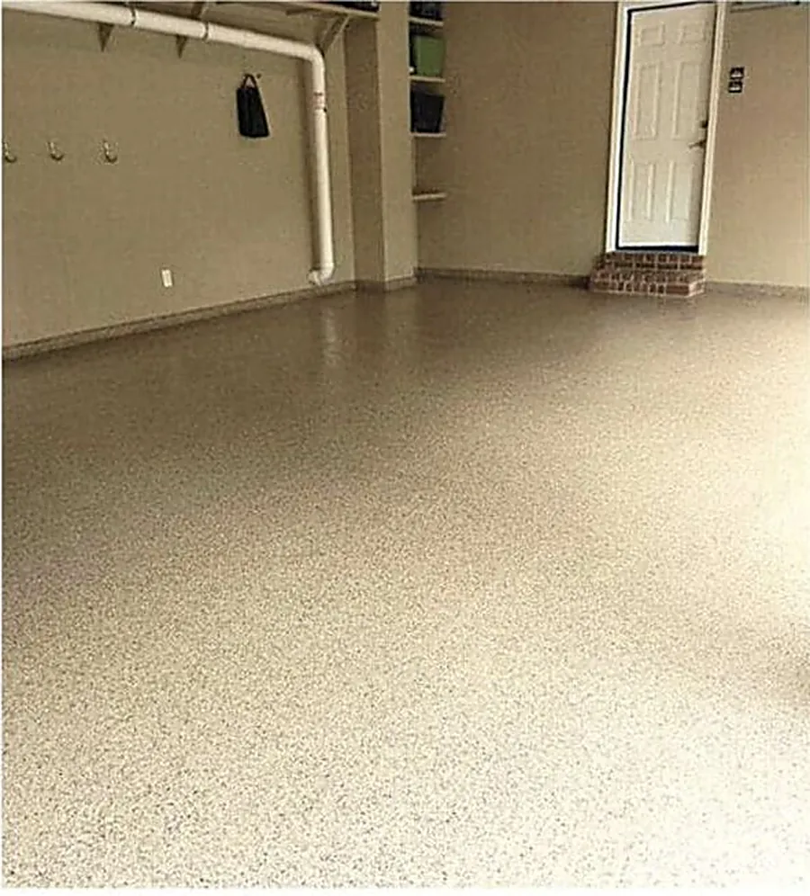
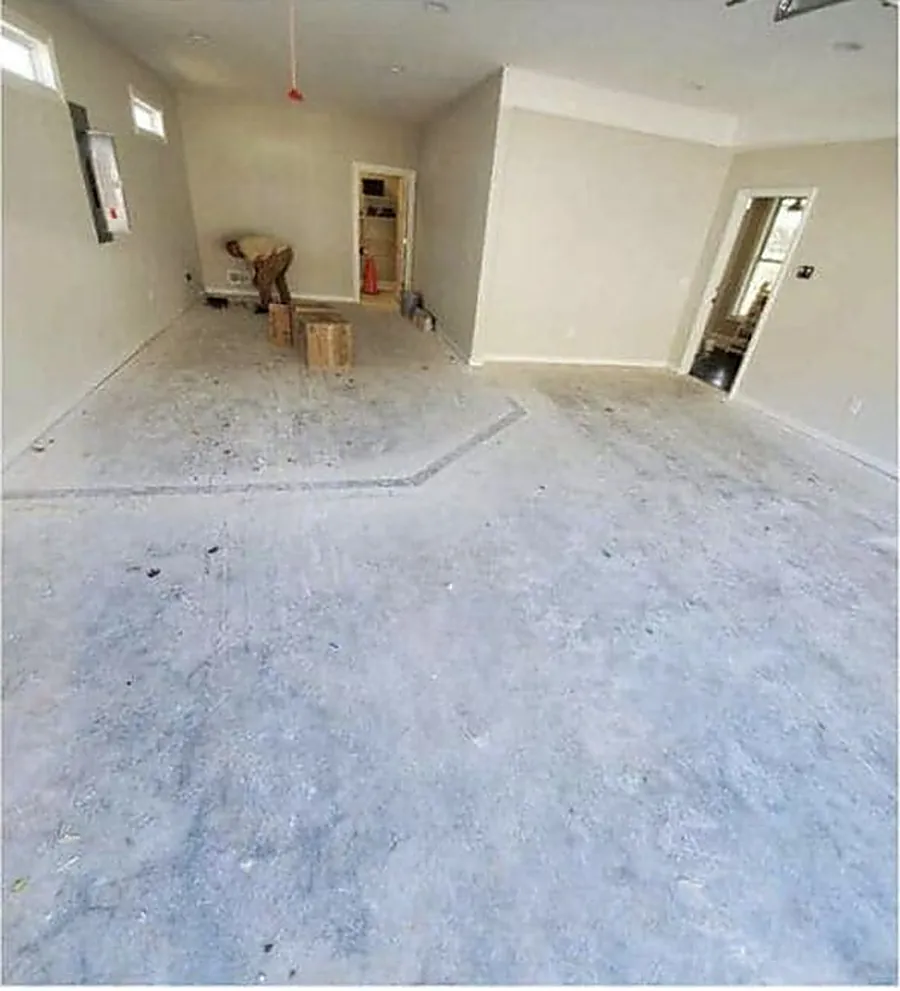
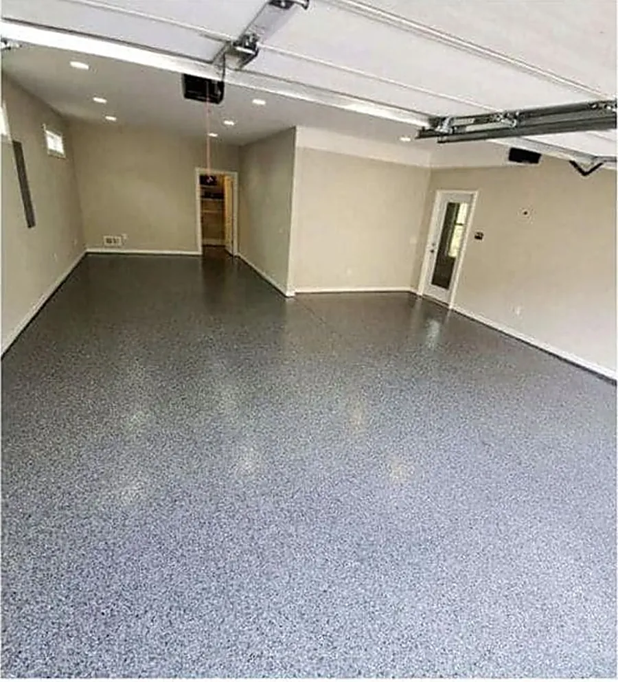
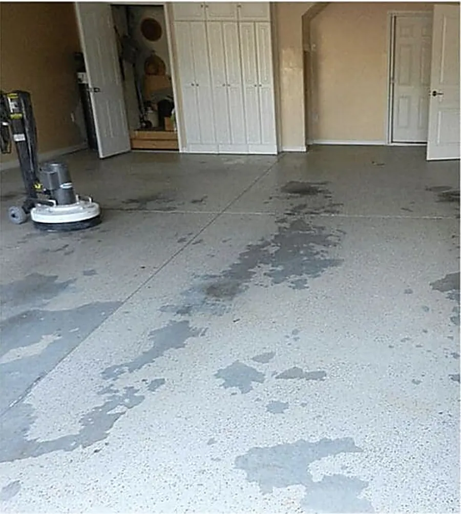
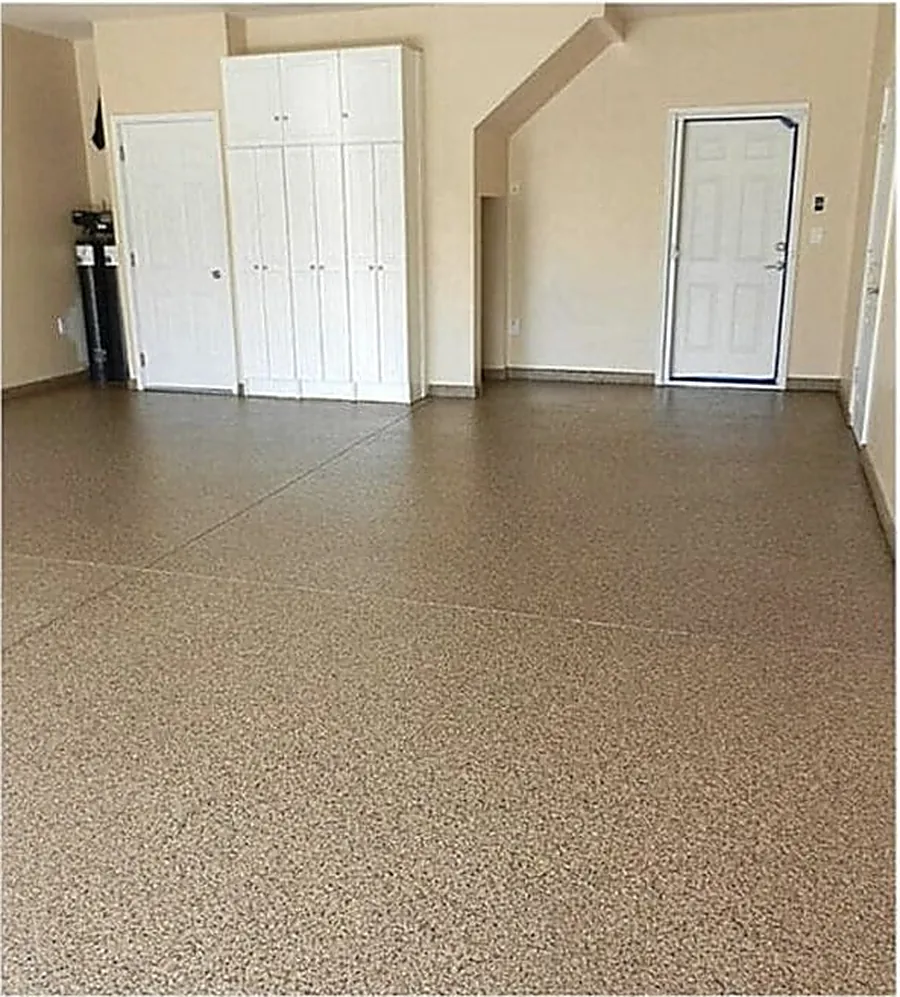
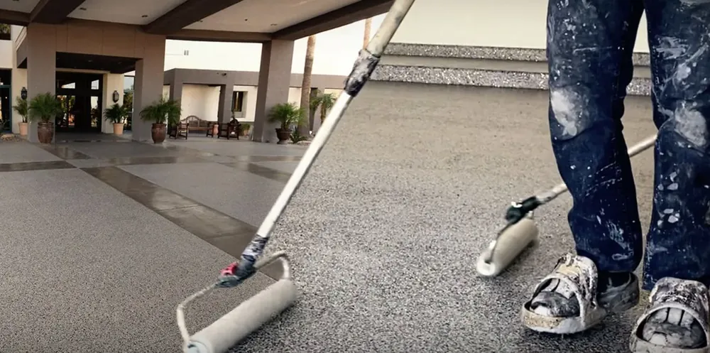
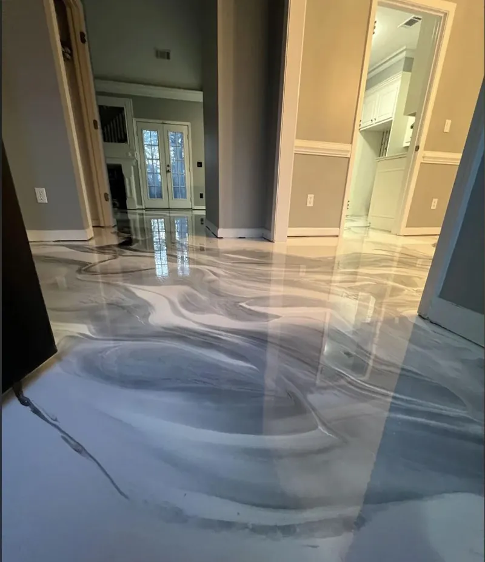

Professional garage, basement, and commercial epoxy floor coating — done right the first time. Serving Omaha and the surrounding metro.
Stained, pitted, salt-eaten concrete is the starting point on most Omaha garages. Here's what a full flake system does to it — diamond-grind prep, pigmented base coat, full-broadcast flake, clear topcoat.






Photos show typical results from the epoxy flake systems we install. Ask for local references at your free estimate.
Epoxy flooring is a durable, resin-based coating applied directly over concrete to protect it and give it a clean, professional finish. Homeowners and business owners use it on garage floors, basement floors, and commercial spaces because it resists oil, chemicals, and the kind of cracking that Nebraska winters cause in bare concrete. The coating bonds to the concrete surface and hardens into a surface that's far tougher than paint — and lasts for years with minimal upkeep.
A true epoxy floor is a two-part system: a resin and a hardener that are mixed on site and react chemically as they cure. That reaction is what gives epoxy its strength. Unlike garage floor paint, which simply dries on top of the slab, epoxy grabs into the pores of properly ground concrete and becomes part of the surface. The result is a seamless, non-porous floor that won't soak up oil drips, antifreeze, or the road salt that rides into Omaha garages on every car from November through March.
Most of the systems we install combine epoxy with other coatings. A typical garage floor gets a pigmented epoxy base coat, a layer of decorative vinyl flake, and a clear polyaspartic or polyurethane topcoat for UV stability and scratch resistance. Commercial floors often get a thicker high-build epoxy or a slip-resistant aggregate for wet areas. We'll walk you through the options at your estimate and recommend the system that fits how you actually use the space — not the most expensive one on the sheet.
Epoxy flooring is the right call in any of these situations:
Not sure if your slab is a good candidate? Call (402) 810-7854 and describe the floor. We'll tell you honestly whether coating makes sense or whether the concrete needs repair first.
We handle every type of epoxy coating job in the Omaha metro — from single-car garages in Benson to multi-bay shops in the industrial parks off I-80. Every project starts with the same thing: a free on-site look at your concrete.
Diamond-ground prep, base coat, decorative flake, and clear topcoat. Built for Nebraska winters and rated for vehicle traffic for 10–20 years.
Turn your unfinished Omaha basement into a clean, usable space. We moisture-test every slab before we coat — no surprises.
High-build systems for auto shops, restaurants, warehouses, and industrial facilities. Rated for forklift traffic and chemical exposure.
The most popular choice for Omaha garages — color chips broadcast into the wet coat give a custom look and add slip resistance when wet.
High-gloss, one-of-a-kind marbled finish for showrooms, man caves, and upscale garages. Every floor is completely unique.
Failing or peeling existing coating? We grind it down and resurface — no full slab replacement needed.
A faster-curing, UV-stable alternative to traditional epoxy. Ideal for garages that get direct sun and for homeowners who want their space back in a single day.
Epoxy flooring is a multi-step process that takes one to two days. First, the concrete is diamond-ground to open up the surface so the epoxy bonds properly — this is the most important step, and it's what separates a long-lasting coating from one that peels in a year. Next, cracks and divots are filled and the slab is cleaned. Then the base coat goes down, followed by a broadcast layer of decorative flake (if selected), and finally a clear topcoat that locks everything in. The floor is walkable within 24 hours and fully cured for vehicle traffic within 72 hours.
Here's what each step looks like on a typical Omaha garage:
We grind every slab. Diamond grinding creates a mechanical bond that holds. Acid etching — what cheap competitors do — leaves residue that weakens adhesion.
Professional-grade, 100% solid epoxy — three to four times thicker than water-based products and rated for vehicle traffic.
Salt damage, freeze-thaw pitting, moisture issues in older Omaha basements — we know how to prep it right every time.
We come to your property, inspect the slab in person, and give you a firm price before we leave. No vague ranges. No surprises.
Concrete in eastern Nebraska takes a beating. Omaha sees dozens of freeze-thaw cycles every winter, and each one lets water seep into the pores of bare concrete, freeze, expand, and break the surface apart a little more. Add the rock salt and liquid de-icers the city spreads on the roads, and it's no surprise that so many local garages have pitted, flaking slabs within a few years of being poured.
A properly installed epoxy coating stops that cycle. Because the surface is sealed, water and salt brine sit on top of the floor instead of soaking in, and you can simply squeegee the slush out the door. The flake texture gives your tires and shoes grip when the floor is wet, and the clear topcoat resists hot-tire pickup during humid Nebraska summers when temperatures climb into the 90s.
We also plan installs around the weather. Epoxy needs the right slab temperature and humidity to cure correctly, so we monitor conditions on every job and adjust products and timing when needed. Cold-weather installs are possible with the right materials — we just won't cut corners to hit a date.
There's no single best epoxy floor — the right choice depends on the space and how you use it. Here's how the most common options compare:
We bring physical samples of every finish to your estimate so you can see them in your own lighting before deciding.
Every floor is different, so we price each job after seeing the concrete in person. Factors that affect the final price include the size of the space, the condition of the existing concrete, the system you choose (solid color vs. decorative flake vs. metallic), and whether the space is residential or commercial.
Other things that can change the scope of a job:
We provide free on-site estimates so you get an exact number before any work begins — call for a quote.
A professionally installed epoxy floor coating typically lasts 10 to 20 years in a residential garage and 5 to 10 years in a high-traffic commercial setting. Longevity depends mostly on the quality of the concrete prep and the thickness of the coating. Proper diamond grinding and a 100% solid epoxy system will outlast any DIY kit by years.
It depends on what's already there. If there's a previous epoxy or paint coating, it needs to be tested for adhesion before a new coat goes on. We test adhesion on every job before we start — if the existing coating is solid, we can often go right over it. If it's failing, we'll grind it down to bare concrete.
You can walk on it in about 24 hours. Light furniture can go back in after 48 hours. Wait a full 72 hours before driving a vehicle onto the surface. We'll give you exact timing based on temperature and humidity — Nebraska weather affects cure times.
Epoxy works well in basements here as long as moisture comes from above the slab, not pushing up through it. If you have hydrostatic pressure, standard epoxy will eventually bubble and delaminate. We test for moisture before every basement job — if we find a problem, we'll address it before coating.
We offer solid color, full-broadcast decorative flake (the most popular choice for Omaha garages), partial flake, and metallic epoxy systems. Decorative flake adds texture that makes the floor less slippery when wet. We'll bring samples to your free estimate.
A smooth, high-gloss epoxy can be slick when wet, which is why most garage systems we install use decorative flake or an anti-slip additive in the topcoat. Both add texture that gives tires and shoes grip, even when you're tracking in snow and slush during an Omaha winter.
Hot-tire pickup happens with thin, water-based kits and garage floor paint. A professional 100% solids system over a diamond-ground slab, sealed with a polyaspartic or polyurethane topcoat, is built to resist it.
Sweep or dust-mop regularly and mop with warm water and a mild, pH-neutral cleaner. Wipe up oil and chemical spills promptly, rinse road salt off in winter, and avoid harsh acids or citrus cleaners that can dull the topcoat.
Yes, as long as the garage or space can be kept within the right temperature range during the install and cure. We use cold-weather products when needed and will tell you up front if conditions call for a different schedule.
We install epoxy floors throughout Omaha and the surrounding metro, including Bellevue, Papillion, La Vista, Millard, Ralston, Elkhorn, Gretna, Bennington, and Council Bluffs, Iowa. Call to confirm your address.
One of the biggest reasons Omaha homeowners choose epoxy is how little work it takes to keep it looking new. Because the surface is sealed and seamless, there's nowhere for dirt, oil, or salt to hide. A quick sweep each week and a mop with warm water and a mild cleaner every few weeks is usually all it takes.
In winter, rinse or squeegee salty slush off the floor instead of letting it dry into a white film. Put a plywood pad or puck under motorcycle and trailer kickstands, use felt pads under heavy furniture in basements, and avoid dragging sharp metal across the surface. Follow those basics and your floor will look good for years — and if it ever takes a hard hit, a damaged area can be repaired and recoated without redoing the whole floor.
We install epoxy floors across the Omaha area, from older homes in Dundee, Benson, and Florence to newer subdivisions in Elkhorn, Millard, and West Omaha. We also work throughout Sarpy County — including Bellevue, Papillion, La Vista, Gretna, and Springfield — and across the river in Council Bluffs, Iowa.
Each part of town brings its own challenges. Older basements in Midtown often need moisture testing and crack repair before coating, while newer garages in Bennington and Elkhorn may still have curing compounds on the surface that have to be ground off. We adjust our prep for every slab so the coating bonds the way it should, no matter where you live.
Garage floor coatings, decorative flake, and metallic epoxy — the finishes we install around the Omaha metro.

